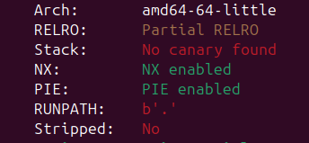
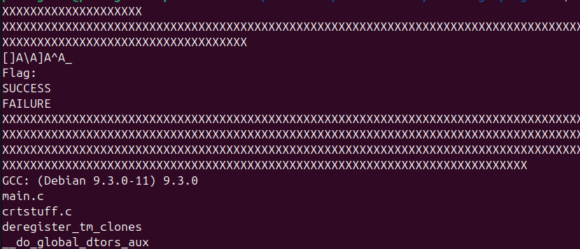
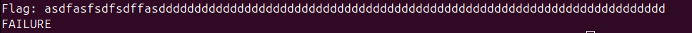
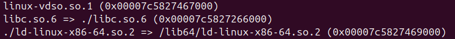
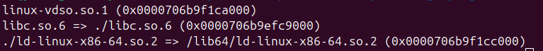
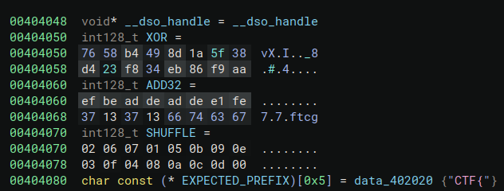
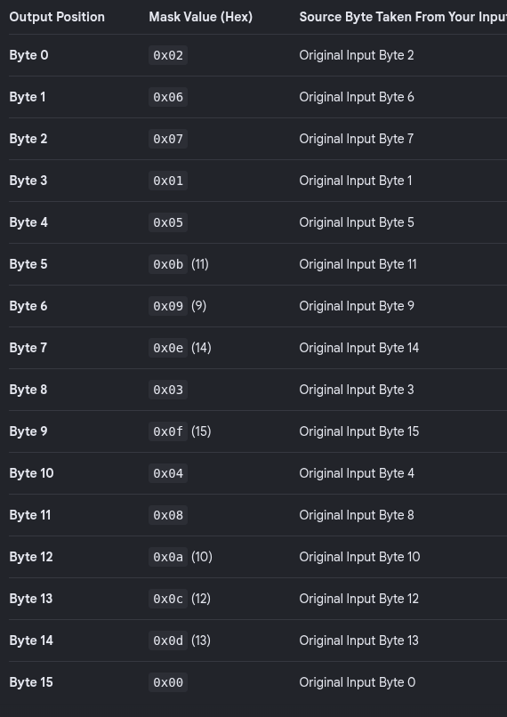

CTF Writeup: Beginner
A writeup for the CTF titled beginner. https://ctftime.org/task/12813
Table of Contents
- Overview
- Security Considerations
- Initial Reconnaissance
- Static Analysis
- Dynamic Analysis
- Findings
- Exploitation
- Conclusion
Overview
Beginner is a CTF from Google's 2020 CTF event. I am doing this CTF as part of my effort to progress as a security researcher. This is the start of my journey as a Junior Security Researcher. I am approaching this with the methodology reflected in the Table of Contents.
I will be running this binary via docker and utilizing binary ninja for static analysis. Dynamic analysis will be done via GDB and potentially other tools.
Security Considerations
The first thing I decided to do was check security settings on the binary after determining it was an ELF.
Checksec

Pwntools' Checksec shows Partial RELRO, NX enabled, and PIE enabled.
- The
Archlets me know that I will be looking at AMD 64 assembly during static analysis. This is also a general consideration for the system this program is designed to run on. Furthermore, this clues me into various considerations if I were to emulate the program, such as if the program was MIPS. Partial RELROtells me that the GOT can still be overwritten with the right vulnerability and is not set as read-only.- Since there is no
Stack CanaryI won't have to worry about that if I find an overflow vulnerability. NXmeans that the stack is non-executable. This lets me know that if I achieve a stack-based overflow, I will not be able to have my shellcode run off of the stack. Instead, I would need to return to somewhere else that is executable and that holds my shellcode.PIEbeing enabled makes is it so that the program will shift around in memory given that ASLR is typically enabled on hosts. If this was a standalone device, that'd be different. This tells me that any productized exploit will need to ask for the starting address and operate off of known offsets between if so required.- Due to the
RUNPATHbeing set to the . directory, replacing libraries with malicious ones would likely be a viable vulnerability. Some form of library hijacking should work. - Since the file is not
Stripped, static analysis will be easier and potentially more fruitful.
Initial Reconnaissance
-
The binary is dynamically linked.
-
After running strings -n 6 beginner:

The first strings are interesting but everything else just seems to be symbols. []A\A]A^A_ is not the flag. -
When you run the program you are prompted for the flag. Initial overflow attempts don't seem to work (I tried much longer strings than in the screenshot).

-
ld-linux-x86-64.so.2andlibc.so.6are in the binary's folder. The images below show that while the libc.so.6 provided is being used by the program, the linker provided is not being used. Instead, my local linker is being used. We can also see that the address are different with each run ofldd, confirming that ASLR is active.

Static Analysis
The following are the notes and results of my static analysis utilizing Binary Ninja.
Points of Interest:
- The user input stored in
var_38goes through a series of changes.
After looking further, static values seem to be assigned to004010be 660f380005a92f00 pshufb xmm0, xmmword [rel SHUFFLE] 004010c7 660ffe05912f0000 paddd xmm0, xmmword [rel ADD32] 004010cf 660fef05792f0000 pxor xmm0, xmmword [rel XOR]SHUFFLE,ADD32, andXOR
var_38is the original input andvar_28is the result of theSHUFFLE,ADD32, andXOR. Below is the first check that happens for validating input, which shows that after all the operations, all characters (0x10) of the original input are supposed to remain the same.int32_t rax_2 = strncmp(&var_38, &var_28, 0x10);- After
rax_2is checked for success of the previous call,result_1is set to check if ourvar_28starts withCTF{if (!rax_2) { result_1 = strncmp(&var_28, EXPECTED_PREFIX, 4); result = result_1; } - At this point, our previous two
strncmpcalls are being checked for success. As long as the previous two calls returned 0, the program should print and return success (0).if (!rax_2 && !result_1) puts("SUCCESS"); - Notes:
- It appears that in order to pass all the checks, the user's input should be a string
that starts with
CTF{, is less than or equal to15 characters, and remain the exact same afterSHUFFLE,ADD32, andXOR. SHUFFLEBefore jumping into Dynamic Analysis if needed, I will attempt to figure out what inputs would survive the operations mentioned above. Below is a table, given theSHUFFLEmask, of the expected placement of each byte after theSHUFFLE.
ADD32XOR
- It appears that in order to pass all the checks, the user's input should be a string
that starts with
Dynamic Analysis
Server/Client:
Ca- If
Findings
Server/Client:
Li(version: 0.0.1):
Exploitation
Server/Client:
MSe
Conclusion
Generative AI was used for:
DebuggingPrint